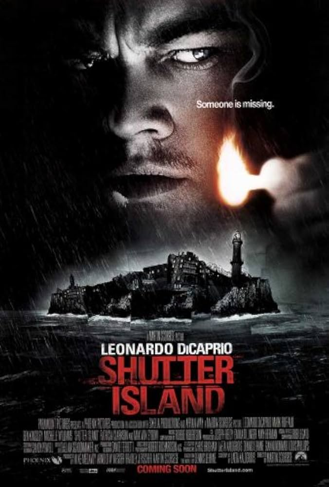

Shutter Island
Movie poster from IMDb (link below)
Why I Love This Movie
Shutter Island is a masterful psychological thriller that keeps you guessing until the very end. Martin Scorsese creates an atmosphere of dread and paranoia. The film's exploration of mental instability and trauma makes you question everything you see on screen.
Key Elements
- Atmospheric tension that never lets up
- Compelling mystery with shocking revelations
- Leonardo DiCaprio's fantastic performance
- Gothic visual style and unsettling score
Movie Details
- Director
- Martin Scorsese
- Release Year
- 2010
- Main Theme
- The fragility of the mind and the nature of reality
Discover more about this gripping thriller on IMDb's Shutter Island page.